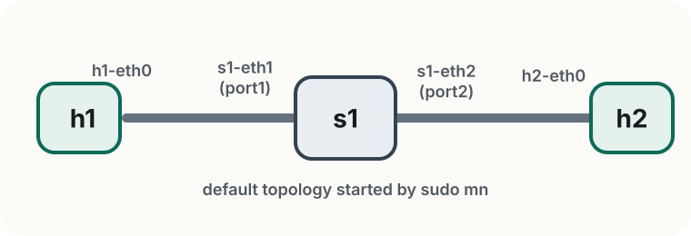
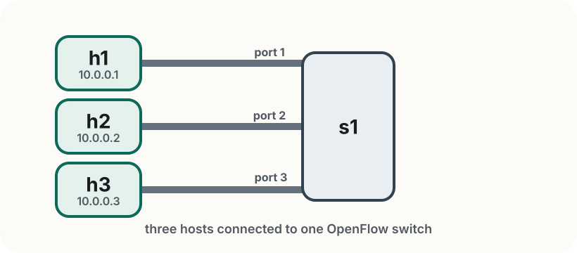

Lab 1
Rogers Executive Workshop 3 — Transport Network
Mininet, OpenVSwitch, and the SDN data plane
In this lab you will:
By the end of this Lab, you should be able to understand how to program the SDN data plane using flexible OpenFlow match-action rules.
SDN separates the control plane from the data plane — the controller expresses policies and the switch acts accordingly
OpenFlow is one way to express forwarding policies, but not the only one. For example, in Lab3, we will see how SRv6 encodes the entire path in the packet header
OVS is a software switch that runs on Linux and understands OpenFlow.
ovs-ofctl commands.OVS is widely used in production environments:
Mininet emulates a network topology on a single machine — hosts, switches, and links all in software.
sudo mn starts a default topology: h1 -- s1 -- h2h1 ping h2, s1 ovs-ofctl dump-flowsMininet gives you the programmable network; you decide how it forwards traffic using OpenFlow.
~/labs/lab1ovs-ofctl commandssudoexit or Ctrl+D — this tears down the topology properlyIf something looks broken or you seeRTNETLINK answers: File exists, then runsudo mn -cto clean up any leftover state before starting again.
Start the default topology: sudo mn

Mininet creates two hosts (h1, h2) and one switch (s1) connected in a line, then drops you into the CLI: mininet>
Pay close attention to the switch ports and how they are connected to the hosts!
Explore the topology from the Mininet CLI:
mininet> nodes # list all hosts and switches
mininet> net # show links between nodes
mininet> dump # show interface and PID details
Run a command inside a specific host by prefixing its name:
mininet> h1 ip addr show
Thenetcommand is extremely useful going forward. Pay close attention to the connections shown by thenetcommand and map it to the figure shown in the previous slide. Do you see the switch ports and how they map to each host?
Now that we have the network up and running, ping between hosts and measure bandwidth:
mininet> h1 ping -c 3 h2 # ping h2 from h1
mininet> pingall # test all host pairs at once
mininet> iperf h1 h2 # measure throughput between h1 and h2
mininet> py h1.IP() # inspect Mininet objects from the CLI
Pings succeed because Mininet starts with a default learning controller. In the next step, you will remove it and see what happens when there are no forwarding rules.
Programming the data plane
Every flow rule has three parts:
Match — which packets does this rule apply to?
Action — what to do with matched packets?
output:N — forward out port Noutput:FLOOD — send out all ports except the input portdrop — discard silentlyCounter — n_packets and n_bytes are updated automatically for every rule
Think of it as a policy statement: "if a packet looks like this, do that, and count how many times it happened."
Here is what a flow rule looks like in OVS:
idle_timeout=0, ip, nw_src=10.0.0.1, nw_dst=10.0.0.2, actions=output:2
ip,nw_src=10.0.0.1,nw_dst=10.0.0.2 selects packets from h1 to h2actions=output:2 forwards them out port 2idle_timeout=0 — rule never expires; without it OVS silently removes idle rules after ~10 sAlways include idle_timeout=0 in every rule you install. You will see this in practice shortly.
How to create flexible network topologies?
Make sure you are in ~/labs/lab1/, then open simple_topo.py. This shows a simple network topology where two hosts connected to one switch:
h1 = net.addHost("h1", ip="10.0.0.1/24")
h2 = net.addHost("h2", ip="10.0.0.2/24")
s1 = net.addSwitch("s1", cls=OVSSwitch, protocols="OpenFlow13")
# links: h1 → s1, h2 → s1 — 10 Mbps, 5 ms delay
net.staticArp()
To keep things simple, in the code above, we use staticArp() to fill in each host's ARP table in advance. Therefore, IP rules alone are enough to forward traffic.
From terminal 1 (inside ~/labs/lab1/), start the topology:
sudo python3 simple_topo.py
From the Mininet CLI, test pair-wise connectivity using pingall. You should see connectivity fail because there are no rules yet:
mininet> pingall # all fail
Now, from terminal 2, inspect the flow table:
sudo ovs-ofctl -O OpenFlow13 dump-flows s1
The output should be empty — no rules, no forwarding.
Run ovs-ofctl commands from terminal 2, not from inside the Mininet CLI.
Install two rules:
sudo ovs-ofctl -O OpenFlow13 add-flow s1 \
"idle_timeout=0,ip,nw_src=10.0.0.1,nw_dst=10.0.0.2,actions=output:2"
sudo ovs-ofctl -O OpenFlow13 add-flow s1 \
"idle_timeout=0,ip,nw_src=10.0.0.2,nw_dst=10.0.0.1,actions=output:1"
From the Mininet CLI, verify that h1 can now ping h2: mininet> h1 ping -c 3 h2
When adding flow-rules usingovs-ofctl, remember to use-o OpenFlow13for OpenFlow v1.3 andidle_timeout=0to make flow-rules permanent. Also note the output ports: recall that we can use thenetcommand from the mininet CLI to figure out the port mappings!
In terminal 2, confirm the rules fired:
sudo ovs-ofctl -O OpenFlow13 dump-flows s1
cookie=0x0, duration=8.1s, n_packets=3, n_bytes=294,
idle_timeout=0, ip,nw_src=10.0.0.1,nw_dst=10.0.0.2 actions=output:2
n_packets=3 confirms the rule matched. To clear all rules and try again:
sudo ovs-ofctl -O OpenFlow13 del-flows s1
Programming flow rules
The topology is already built for you. See ~/labs/lab1/exercises/topology.py.

Your goal: make h1 ↔ h2 work by adding exactly two flow rules using ovs-ofctl commands.
h3 is connected but not used yet. Confirm port numbers with net in the Mininet CLI.
Treat the two directions separately. In the exercise scripts, matchin_port,nw_src, andnw_dstso each rule applies only to the traffic you intend.
Ctrl+D or exit), then clean up: sudo mn -csudo python3 exercises/topology.pynetTODO rules in exercises/part1/add_rules.sh, then run: sudo bash exercises/part1/add_rules.shsudo python3 exercises/part1/verify.pyCompare with solutions/part1/add_rules.sh if you get stuck.
Before moving on to Exercise 2:
h1 ping -c 3 h2 succeed from the Mininet CLI?dump-flows s1 show n_packets > 0 on both your rules?solutions/part1/add_rules.shn_packets should increase after each successful ping.
Same topology. Extend your rules so:
h1 ↔ h3 also worksh2 and h3 cannot reach each otherThe h1 ↔ h2 rules from Exercise 1 are already pre-filled as a reference.
Add two more rules for h1 ↔ h3.
You do not need an explicitdroprule forh2 ↔ h3. In OVS, packets that do not match any rule are dropped automatically.
Keep the topology running from Exercise 1 — no restart needed.
exercises/part2/add_rules.sh — h1 ↔ h2 rules are pre-filled as referenceTODO rules for h1 ↔ h3, then run: sudo bash exercises/part2/add_rules.shsudo python3 exercises/part2/verify.pyCompare with solutions/part2/add_rules.sh if you get stuck.
ovs-ofctl says version negotiation failed.
Add -O OpenFlow13 to every ovs-ofctl command.
I added rules, but ping still fails.
Check the port mapping with net or sudo ovs-ofctl -O OpenFlow13 show s1. Make sure you installed both directions and that in_port, nw_src, and nw_dst match the traffic you intend.
My rules disappear after a short pause.
Add idle_timeout=0 to every add-flow rule so OVS does not age it out.
Exercise 2 still lets h2 and h3 talk.
Your matches are too broad. Only install rules for h1 ↔ h2 and h1 ↔ h3; packets without a matching rule are dropped automatically.
Mininet or the verifier behaves strangely after a previous run.
Exit Mininet, run sudo mn -c, then restart the topology from ~/labs/lab1.
In this lab you:
This is the core idea we build on in later labs: first you program forwarding directly; by Lab 4, a transport slice controller will take a higher-level request and realize it using the same underlying mechanisms.
Next in the schedule is Concepts 2, where you will learn about SDN controllers. After that, Lab 2 moves from manual rules used in this Lab to network programming with an SDN controller.